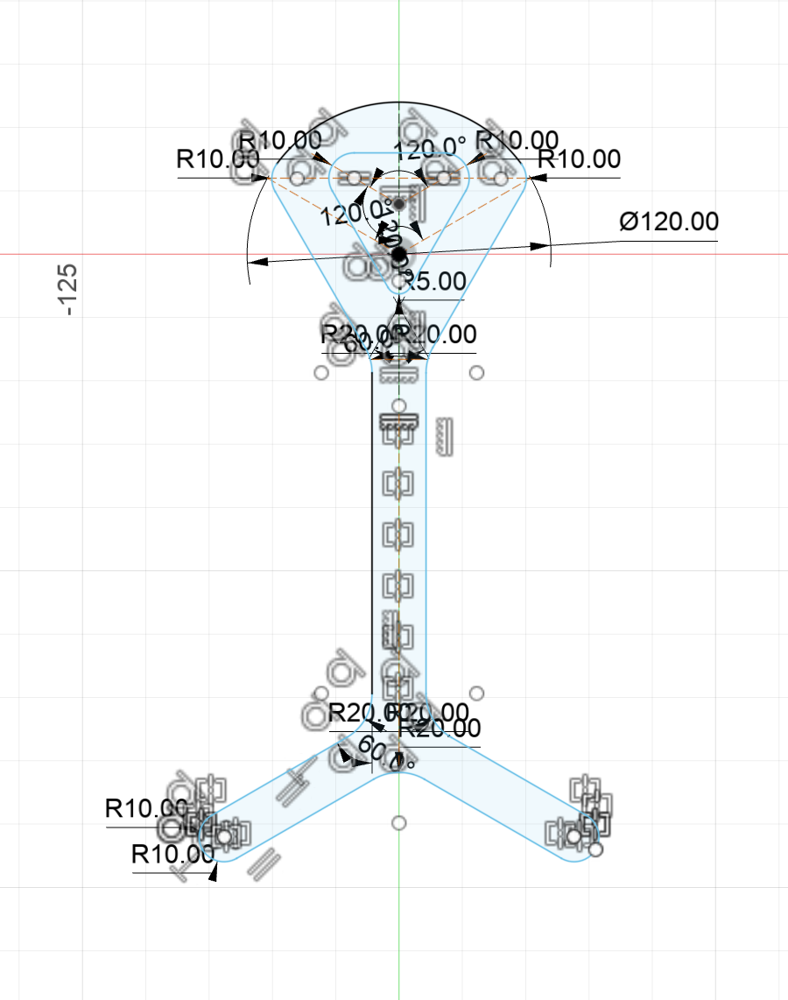
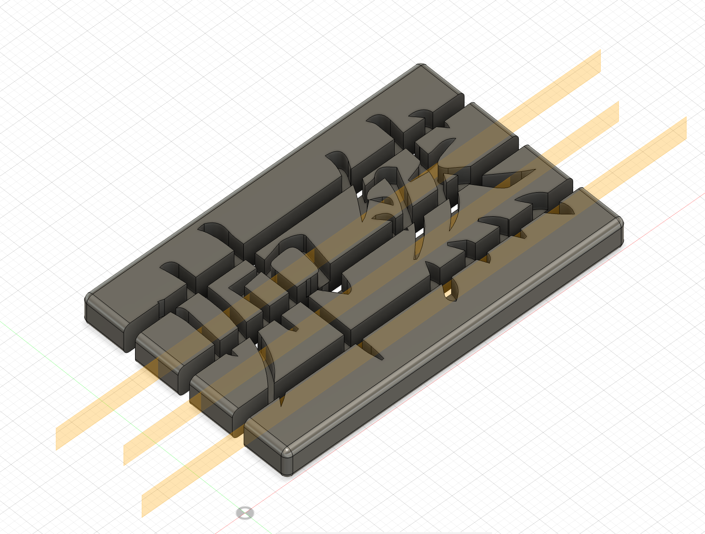

<div class="textcontainer">
<p class="margin"> </p>
<h2 align="center"><b><u>Week 8: CNC</u></b></h2>
<p class="margin"></p>
<p></p>This week I decided to make a headphone stand for my bluetooth headphones --- instead of having them lay around on my desk, I could finally have a
place to put them. The design was inspired by a picture I saw after googling "Headphone stand." Google is usually a great source of inspiration. Since
the design was 2-dimensional, all I needed to do in Fusion was make a drawing and export as DXF.
<div class="flexrow"></div>
<p></p>After uploading the DXF and running the CNC mill, I took the piece to the sander and got rid of the rough edges, and generally smoothed it out
a little. Here is the end result:
<div class="flexrow"><img src="headphones_stand.png" alt="headphones stand finished" style="width:30%" border="3px"></div>
<p></p>For the molding and casting component of the assignment, I decided to make a small nametag of my Chinese name. I made the mold in fusion by converting
an image of my name into an SVG and uploading it to fusion, then simply extruding it into a block. I also cut up the block into 4 pieces so that the
mold would be easier to break apart once dried.
<div class="flexrow"></div>
<p></p>Here is the printed mold, with plaster poured into it.
<div class="flexrow"><img src="mold.png" alt="mold" style="width:30%" border="3px"></div>
<p></p>The mold was very small, so it was hard to cover every bit of it with the plaster mix.
</div>